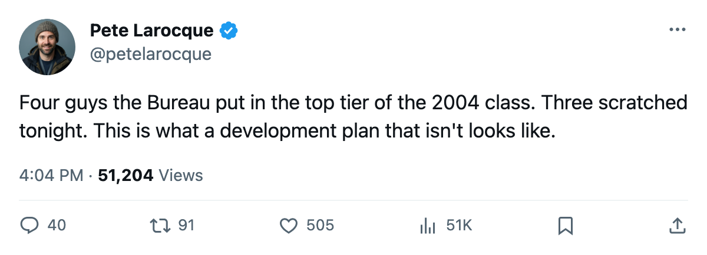
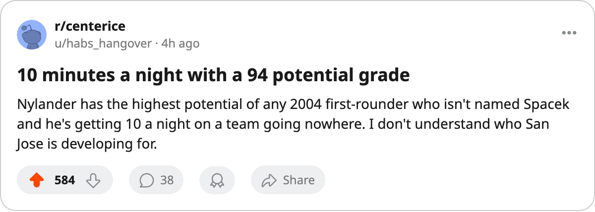

Four 2004 First-Rounders Have 90+ Potential. Three Are Scratched Tonight.
The Bureau saw something in the 2004 draft's top tier. Their clubs have asked them to watch from the bench.
 Pete LarocqueScouting editor · The Prospect File
Pete LarocqueScouting editor · The Prospect File
The 2004 draft produced four first-rounders the Bureau rates at 90 potential or above. As of this week, three of the four are scratched and the fourth has played 11 games.
Roger Nylander73 sits at the centre of it. The 12th pick overall carries a 94 potential grade, the highest among the 2004 first-rounders who are actually in a league lineup. He has 4 points in 11 games at 10.3 minutes a night for  San Jose Sharks, a club with 68 points and the worst record in the Pacific. His morale is 89. His contract is $0.95M with 2 years left. He is 20.
San Jose Sharks, a club with 68 points and the worst record in the Pacific. His morale is 89. His contract is $0.95M with 2 years left. He is 20.
San Jose's entire roster sits below its base grade on the Bureau's Development Index right now.  Patrick Marleau88 is -1. Scott Thornton is -2. Claude Lapointe, Jason Wiemer and Alexander Korolyuk are all -3. Even Nylander himself reads 2 below base at 71 overall against a 73 base. The veterans are falling and the 12th pick has played 11 games.
Patrick Marleau88 is -1. Scott Thornton is -2. Claude Lapointe, Jason Wiemer and Alexander Korolyuk are all -3. Even Nylander himself reads 2 below base at 71 overall against a 73 base. The veterans are falling and the 12th pick has played 11 games.
The scratch list tells the story
Vaclav Spacek73, the 1st pick, carries 91 potential and 50 games played. He has 17 points at 7.6 minutes a night and is currently scratched from  Toronto Maple Leafs's lineup. At least he has been in the building.
Toronto Maple Leafs's lineup. At least he has been in the building.
Mika Sulku72 went 4th overall. The Bureau gives him 92 potential. He has 5 points in 40 games at 7.7 minutes for  Calgary Flames and is scratched. A 60-point team with the 4th pick from last June using that pick at 7.7 minutes a night is a choice someone made deliberately.
Calgary Flames and is scratched. A 60-point team with the 4th pick from last June using that pick at 7.7 minutes a night is a choice someone made deliberately.
Andreas Stahle69 went 19th. His potential is 96, the highest of the four. He has played 4 games and has 0 points. Scratched from Toronto.
| player | pick | potential | GP | points | mpg | status |
|---|---|---|---|---|---|---|
| Vaclav Spacek | 1st | 91 | 50 | 17 | 7.6 | scratched |
| Mika Sulku | 4th | 92 | 40 | 5 | 7.7 | scratched |
| Roger Nylander | 12th | 94 | 11 | 4 | 10.3 | dressed |
| Andreas Stahle | 19th | 96 | 4 | 0 | 17.8 | scratched |
Nylander's shoulder is not the explanation
He carried a shoulder issue with a return date of 2004-12-04. The season record opens December 1. That is at most a three-day absence. He has been healthy since. Eleven games in the 64 days since that return date is not an injury story. It is a usage decision.
His best grades sit in areas that do not show up in a box score: 85 in injury resistance, 80 in aggression, 77 in agility and balance. His 75 accuracy and 75 checking are the attributes of a player the Bureau believes can handle a top-six role. The shot power is unlisted at the bottom end of his profile, which matches what the ice shows: 4 goals in 11 games, all even-strength, no assists. He is finding his way at a pace that a 10.3-minute role permits and nothing more.
What the calendar says about patience
The regular season is done. The draft is 75 days away. These four young men will carry their potential figures into the summer and every club with a 2004 first-rounder on its roster will decide again, in front of a scouting report that reads 91, 92, 94 or 96, whether to hand them a regular shift in October.
The San Jose Sharks lineup from this season shows what San Jose would need to clear for Nylander: Marcel Hossa76 at 76 overall and 15.1 mpg, Niko Dimitrakos at 76 and -2 on the Index, Alyn McCauley at 74 and -2. None of these men is untouchable, and none is outperforming what the Bureau projected. The path has existed all year.
I saw the 2004 class before June. The Bureau's pre-draft grades had Nylander, Sulku, Spacek and Stahle in the same tier as the best players in the class. The potential figures have held. The minutes have not materialized. That gap between what the book says these players can become and what their clubs are asking them to play is the draft story of 2005.

